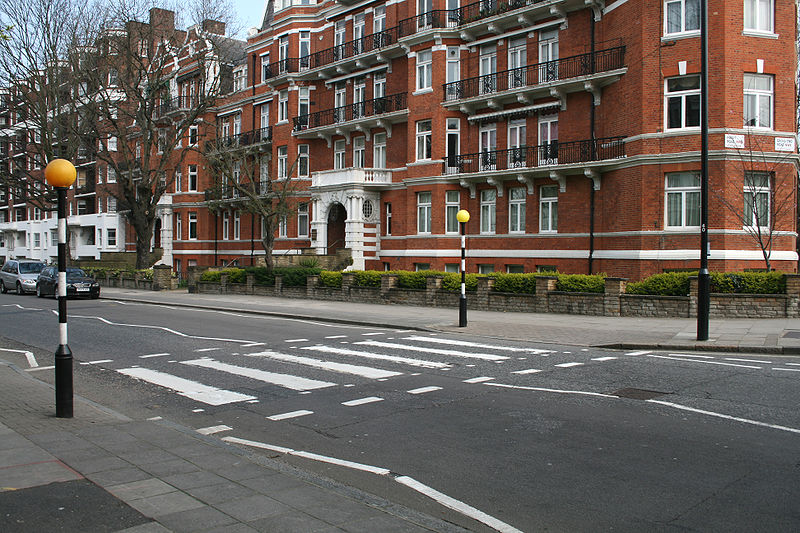

Welcome to Wikipedia
the free encyclopedia that anyone can edit. 5,904,473 articles in English.
- Arts
- Biography
- Geography
From today's featured article
Portrait Diptych of Dürer's Parents is the collective name for two late-15th-century portrait panels by the German painter Albrecht Dürer. They show his parents, Barbara Holper and Albrecht Dürer the Elder, when she was around 39 and he was 63, and are among four paintings or drawings Dürer made of the couple. The portraits are unflinching records of the physical and emotional effects of ageing, which Dürer may have intended either to display his skill to his parents or as keepsakes while he travelled as a journeyman painter. His father's panel is considered the superior work and has been described as one of Dürer's most exact and honest portraits. The Dürer family was close, and his later writings show the love and respect he felt toward his parents. The panels, separated since at least 1628, were reunited in the Germanisches Nationalmuseum's 2012 exhibition "The Early Dürer". (Full article...)
Recently featured: Siberian accentor*Analog Science Fiction and Fact* Stephen, King of England Archive*By email*More featured articles
In the news
- American novelist Toni Morrison (pictured) dies at the age of 88.
- India revokes Jammu and Kashmir's special status and establishes Ladakh as a separate territory.
- In the United States, 32 people are killed and more than 50 others are injured during separate mass shootings in El Paso, Texas, and in Dayton, Ohio.
- The United States formally withdraws from the Intermediate-Range Nuclear Forces Treaty with Russia.
- A prison riot in Altamira, Brazil, leaves 62 people dead.
Ongoing: Hong Kong protests Recent deaths: Sushma Swaraj *Willi Tokarev*Bjorg Lambrecht*Kanti Bhatt*Nuon Chea*Cliff Branch*Joe Longthorne
Did you know...

- ... that the name of the Afsarwala tomb (pictured) translates as 'officer's tomb', but the identity of the occupant is unknown?
- ... that Günther Leib, who often sang at the Halle Handel Festival, was called a "first rate Beckmesser" by The New York Times when he first appeared at the Metropolitan Opera?
- ... that Elongatoolithus, Macroolithus, and Nanhsiungoolithus were the first types of fossil eggs to be given names in the modern classification system?
- ... that American academic Amy Wax graduated from Harvard Medical School before becoming a lawyer?
- ... that the Pampean flat-slab is an area of low angle subduction in South America, associated with a large volcano-free gap in the Andean Volcanic Belt?
- ... that Starting for the Hunt by Aelbert Cuyp is an early example of an equestrian portrait of someone who was not a member of court?
- ... that Lionel Matthews was posthumously awarded the George Cross for the courage he displayed while a prisoner of war?
- ... that following the release of "You Need to Calm Down", GLAAD reported an "influx" of $13 donations?
On this day
August 8
- 1264 – Reconquista: In the early stages of the Mudéjar revolt of 1264–1266, Muslim rebels captured the alcázar of the city of Jerez, holding it for about two months.
- 1919 – The Third Anglo-Afghan War ended with the United Kingdom signing a treaty recognising the independence of the Emirate of Afghanistan.
- 1969 – At a zebra crossing in London (pictured), photographer Iain Macmillan took the photo that was used for the cover of the Beatles' album Abbey Road.
- 2009 – Nine people died when a tour helicopter and a small private airplane collided over the Hudson River near Frank Sinatra Park in Hoboken, New Jersey.
- 2014 – The World Health Organization declared the Western African Ebola virus epidemic, which began in December 2013, a Public Health Emergency of International Concern.
Today's Featured Picture

The Cuban green woodpecker (Xiphidiopicus percussus) is a species of bird in the family Picidae. It is the only species within the genus Xiphidiopicus and is endemic to Cuba. A distinctive, relatively small woodpecker of the general size and shape of a sapsucker, the Cuban green woodpecker occasionally appears crested, with bright olive-green overparts and yellow underparts. The nape and upper breast are bright red, with some black bases to feathers usually visible, with a black chin and throat; the crown is red in males and black with white stripes in females. Females are significantly smaller than the male and generally shorter-billed. Juveniles are generally duller in plumage, showing more barring and streaking below. It typically measures 21 to 25 cm (8.3 to 9.8 in) in length and weighs 48 to 97 g (1.7 to 3.4 oz). This picture shows a female X. p. percussus individual.
Recently featured: Farmhouse in ProvenceCuriosityI. Rice Pereira ArchiveMore featured pictures